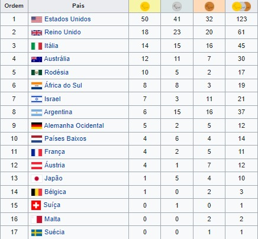

1964 Tóquio, JapãoOs Jogos Paralímpicos de Verão de 1964, ou então mais conhecidas como as Paralímpiadas de Verão de 1964, originalmente conhecidas como os 13os. Jogos Internacionais de Stoke Mandeville, foram a segunda edição dos Jogos Paralímpicos.Realizados em Tóquio, Japão,foram a última edição realizada na mesma cidade que os jogos até os Jogos Paralímpicos de Verão de 1988. O termo "Jogos Paralímpicos" só foi aprovado pelo Comitê Olímpico Internacional em 1984, o Comitê Paralímpico Internacional só foi fundado em 1989. Contrastando com os Jogos de 1964, muitos eventos tiveram mais de três participantes, o que acabou com a garantia automática de medalhas em cada provaModalidades→Tiro com arco→Atletismo →Dardos Paralímpicos →Sinuca →Natação →Tênis de mesa →Levantamento de Peso →Basquetebol em cadeira de rodas →Esgrima em cadeira de rodas Medalhas |